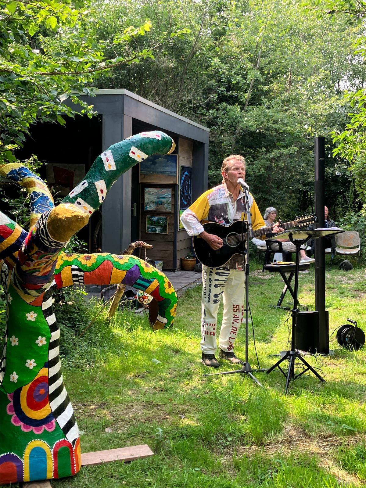

Art Wildrijk
© Jelle Draper
Een Zomer Thuis
elke zaterdag en zondag
4 jul — 16 aug 2026
11.00–17.00 uur
elke zaterdag en zondag
4 jul — 16 aug 2026
11.00–17.00 uur
Over
In de weekenden van 4 juli tot en met 16 augustus 2026 vindt in het idyllische Wildrijk de jubileumeditie van Art Wildrijk plaats. Onder de titel “Een Zomer Thuis” wordt deze bijzondere kunstroute voor de tiende keer georganiseerd in en rondom het karakteristieke boshuis van initiatiefnemers Leo van der Leden en Vera van Vuuren. Een Zomer Thuis verwijst naar de sfeer van rust, ontmoeting en verbondenheid die zo kenmerkend is voor Art Wildrijk: kunst midden tussen de bomen.
Kunstenaars
Houtsnijwerk
Vladimir Bakun maakt gebruik van traditionele technieken uit Siberië om de verborgen kern van het hout te ontdekken.
Zuid-Siberië, 1965
Gemixte technieken
Hans Cornel experimenteert met materialen. Hij speelt met thema’s als energie, ruimte en landschap.
Bussum, 1952
Aquarel
Martin de Rooij heeft, tijdens en na zijn loopbaan als tekenleraar in Hoorn, altijd zelf geschilderd. Zijn onderwerp is het Noord-Hollands landschap, waar de horizon altijd aanwezig is.
Utrecht, 1955
Gemixte technieken met papier, acrylverf
Marja van Etten maakt veelal abstract werk en zoekt in elk schilderij naar een balans tussen licht en beweging.
Schagen, 1958
Olieverf
Els Muntjewerf laat zich inspireren door het strand en de polders en maakt indringende landschappen.
Oudesluis, 1946
Gemixte technieken
Jacintha Roos gebruikt in haar werk verschillende materialen en technieken, en altijd kleurrijk.
Schagerbrug, 1967
Staal
Michiel Schierbeek maakte als beeldhouwer verschillende buitenbeelden. Nu legt hij zich toe op de fotografie.
Amsterdam, 1948
Foto
Jacco Tuijn combineert woeste wandelingen met wervende fotografie, puike portretten en loeischerpe observaties.
Heemskerk, 1967
Vilt
Leo van der Leden organiseert creatieve processen en maakt daar zelf ook deel van uit. Hij houdt van de schoonheid van het leven, en is mede-organisator van Art Wildrijk.
Beverwijk, 1954
Gemixte technieken
Vera van Vuuren is liefhebster van moderne kunst en van het Noord-Hollands landschap, en schildert dat op impressionistische wijze. Mede-organisator van Art Wildrijk.
Dandenong, 1959
 © Jelle Draper
© Jelle Draper

Live muziek
Van 12 juli tot en met 16 augustus speelt Leo van der Leden elke zondag om 15.00 uur live muziek tussen de kunstwerken.